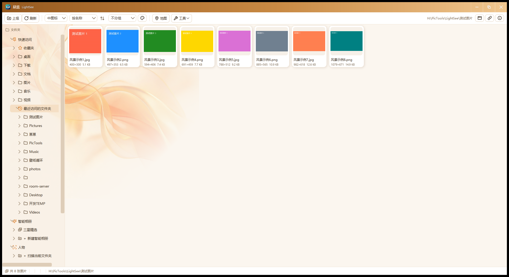

尽览把 ACDSee 的看图习惯和 Apple 的清爽设计放在了一起：左边文件夹、右边缩略图墙、双击看大图，一用就会。几万张图的大文件夹也不卡，星级/色标/标签、智能相册、人脸聚类、OCR 搜索、照片地图一应俱全，纯绿色、无广告、不联网，照片数据不出你的电脑。
Windows 10 / 11 · x64 · 首次运行如提示缺少环境，装一下免费的微软 .NET 桌面运行时即可

几万张图的大文件夹也不卡：只渲染屏幕里看得见的那部分
小/中/大三档切换，双击进大图：滚轮缩放、拖动平移、预加载翻页几乎无等待，空格键放幻灯片。
数字键 0-5 打星，右键贴彩色圆点和文字标签；"智能相册"按规则自动精选，不用手动挑。
本地人脸聚类，长得像的自动归成一个人；重命名、合并、忽略都支持。识别在本机完成，数据不上传。
图片内文字搜索（OCR）、重复照片查找、按画面主色调筛选——找一张"蓝色调的海"选蓝色就好。
带定位的照片自动上地图，卫星图查看，悬停看缩略图与地名，点标记直接看大图。
晴空蓝、深海蓝调、翡翠玉髓、落日橙……每套皮肤配一幅专属艺术画融入窗口，换肤即换心情。
批量重命名、格式转换、压缩；一键剥除照片里的 GPS 定位等隐私信息，加水印也顺手。
不写注册表垃圾、无后台进程、无自启动；配置跟软件走，换电脑拷走整个文件夹就行。
浏览、看图、整理、OCR、人脸识别全部在本机完成。不弹广告、不上传照片、不需要登录。
持续打磨，完整日志见安装包内 README